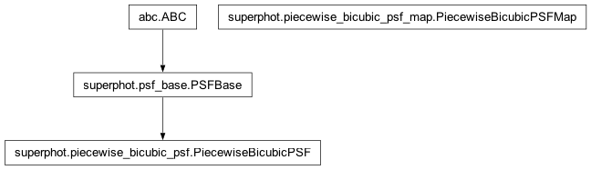

superphot.piecewise_bicubic_psf_map module
Class Inheritance Diagram

A wrapper class for working with PSF/PRF maps from the C/C++ library.
- class superphot.piecewise_bicubic_psf_map.PiecewiseBicubicPSFMap(star_shape_map_tree)[source]
Bases:
objectProvide convenient python interface to shape fitting results.
- __call__(term_values)[source]
Evaluate the map for a given set of terms.
- Parameters:
term_values – The terms that PSF parameters depend on evaluated for the particular source we wish to know the PSF of.
- Returns:
The PSF/PRF the map predicts for the given arguments.
- Return type:
PSF
- __init__(star_shape_map_tree)[source]
Prepare to query the map generated by a star shape fit.
- Parameters:
star_shape_map_tree (SuperPhotIOTree) – The result returned by calling FitStarShape.fit().
- Returns:
None